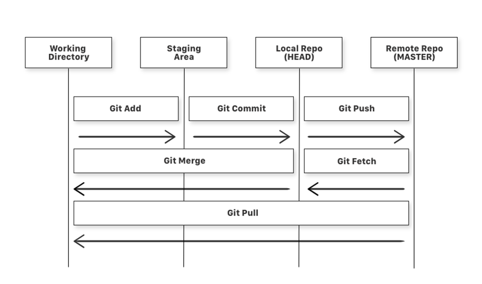

About GIT
What is GIT?
Git is a version control system used to track changes in code, collaborate with other team members, and manage different versions of a project. With Git, you can:
- Track and save changes in your project.
- Undo mistakes by reverting to previous versions.
- Collaborate with others without overwriting each other’s work.
GIT WorkFlow
Basic Git terminologies
Working Directory
The actual directory where project files are located. Modifications made to files in the working directory are considered 'untracked' until explicitly staged for commit.Repository (Repo)
A project folder tracked by Git. It contains all your files and their history.Staging Area
A space where changes are gathered before committing them.Commit
A saved snapshot of your project at a specific point.Branch
A parallel version of your project to develop features or fix bugs.Remote Repository
A version of your repo stored on the internet (e.g., GitHub).Pull / Push
Sync changes between your local repo and the remote repo.Git Workflow Steps
Clone/Init Repository
Create a local copy of an existing repo (clone) or start a new one (init).Make Changes
Edit code files or add new files.Stage Changes
Move the changes you want to commit to the staging area.Clone/Init Repository
Save the staged changes with a meaningful commit message.Clone/Init Repository
Upload your local changes to a remote repository (e.g., GitHub).Clone/Init Repository
Download changes from the remote repo if others have made updates.